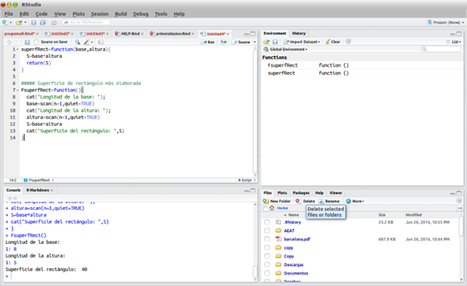

Tarea 9 - R
La sintaxis en R es muy similar a la de otros lenguajes de programación como JAVA o C. Las normas básicas que definen la sintaxis de R son:
- No se tienen en cuenta los espacios en blancos: podemos o no dejar espacios para que el código se puede ordenar de forma adecuada y poder entenderse.
- Se distinguen las mayúsculas y minúsculas: para variables en el código, podemos crear diferentes variables con nombres iguales pero alternando mayúsculas y minúsculas.
- Se pueden incluir comentarios: como vimos anteriormente los comentarios se utilizan para añadir información en el código.
- No es necesario terminar cada sentencia con el carácter de punto y coma (;): en la mayoría de lenguajes de programación, es obligatorio terminar cada sentencia con este carácter. En en cambio R podemos o no terminar de esta forma.
- Lenguaje orientado a objetos: todo en R son objetos, las variables, datos, funciones y resultados, que se generan en R son objetos estos se modifican o manipulan con operadores o funciones (que a su vez son objetos).
Descargar R aquí
Paradigma
R es un lenguaje que combina el paradigma Funcional y Orientado a Objetos, en este sentido es muy versátil y extensible mediante los paquetes disponibles en CRAN - Comprehensive R Archive Network.
- Funcional significa que las funciones en R se pueden manipular como se manipulan los vectores. R es un lenguaje de programación funcional y por ello las funciones se pueden utilizar para hacer cualquier cosa. Se pueden asignar a variables, almacenarlas, asignarlas a listas, pasarlas como argumentos a otras funciones, se pueden crear funciones dentro de otras funciones y una función puede retornar otra función como resultado. En particular las funciones son objetos, lo cual nos lleva al punto siguiente.
- Orientado a Objetos significa que las variables, los datos, las funciones y sus resultados se pueden manipular como objetos. Estos objetos tienen un nombre y una estructura, además de las funciones que los manipulan. En particular algunos objetos se pueden manipular mediante los operadores, aritméticos, de comparación o lógicos. Las opciones de las funciones son objetos que se pueden manipular, así como las fórmulas o expresiones.
R es un lenguaje interpretado (como Java) y no compilado (como C, C++, Fortran, Pascal, etc.), lo cual significa que los comandos escritos en el teclado son ejecutados directamente sin necesidad de construir ejecutables.
